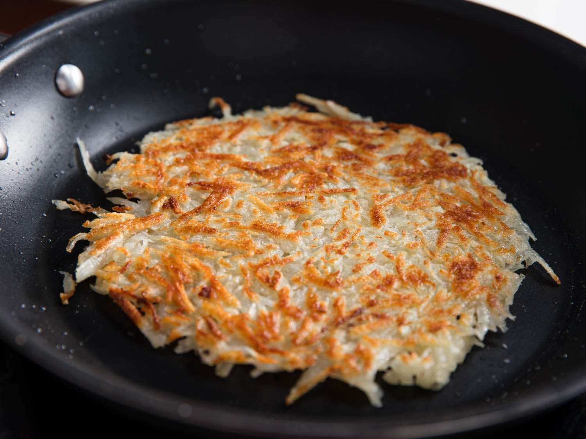

Cripsy Hash Browns

What's the secret to the crispiest hash browns ever? Press out as much extra moisture as possible after grating and before frying. Here's how you can make them perfectly browned and extra crispy every time.
Ingredients:
- Russet Potatoes
- Extra Virgin Olive Oil
- Salt
Steps:
- Peel and grate the potatoes.
- Squeeze out the moisture.
- Cook the hash browns.
- Flip the hash browns.
- Serve.